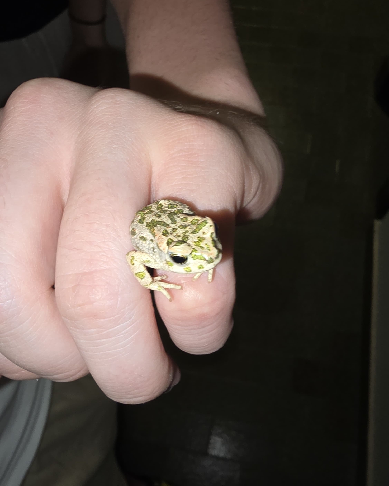

DIARY
22/10/2026
Sometimes the simplest ideas are the greatest solutions. From today we are implementing a schedule for daily chores such as laudry, fold socks or swiping the floor. Exacly like when i was a child and my mum made me do chores while she was working. i will report on how it goes.
16/08/2026
A small little frog fonund home in my boyfriend's garage during the night. Or so he thought, because after a few glance we decided it was not safe for him to stay there and excorted him to the garden. Not sure if the little fella agreed with us, i fear we may resee him again in the garage, but at least he is safe for now and we took a chance to take a few pictures.
